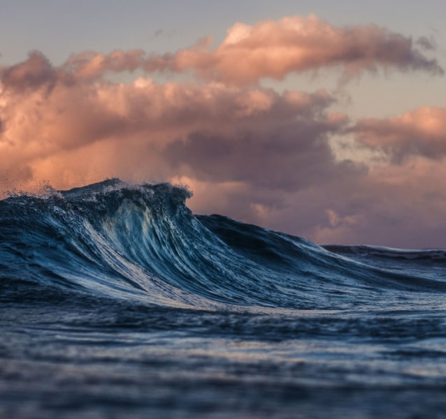

바다

sea
바다
아름답게 물결치는 바다를 한참 바라본 적이 있나요? 저는 해변에 앉아 멍하니 바다를 바라보는 시간을 좋아합니다.
하얗게 부서지는 파도를 눈으로 감상하고, 시원하게 들려오는 소리를 듣고, 멀리서 불어오는 짠내를 맡으면 내가 바다를 정말 좋아하는구나. 하고 깨닫게 됩니다.
PICTURES
다양한 바다의 모습을 담은 사진들
SEA,
OCEAN,
ANIMALS
JELLYFISH
자포동물문 해파리강, 히드라충강의 부유 세대를 통틀어 이르는 말. 몸은 한천질이고 삿갓 모양으로 생겼으며 갓 밑에는 많은 촉수가 늘어져 있고 그 가운데에 입이 있다. 촉수 표면에는 많은 자세포가 있는데, 그 속에 있는 독침으로 먹이를 쏜다.
더보기WHALE
고래는 포유강 고래목에 속하는 동물을 통칭한다. 고래는 다시 크게 수염고래아목과 이빨고래아목으로 나눌 수 있다. 수염고래아목에 속하는 고래는 긴 수염이 달려있어서 물을 빨아들이고 난후 수염으로 거른 플랑크톤을 섭취하며, 이빨고래아목에 속하는 고래는 종류에 따라 작은 어류에서부터 큰 포유동물에 이르기까지 사냥해서 잡아먹는 특징이 있다. 고래목에는 현재까지 총 90여 종이 알려져 있다.
더보기SUNFISH
개복칫과의 바닷물고기. 몸의 길이는 2~4미터이고 달걀 모양으로 납작하며, 등은 파란색이고 배는 잿빛 흰색이다. 살가죽이 두껍고 지느러미가 특이하여 꼬리가 없는 반쪽의 기형 물고기처럼 보인다. 한국, 태평양, 지중해 등지에 분포한다.
더보기SQUID
연체동물문 두족강 갑오징어목과 살오징어목의 일부 종들을 통틀어 이르는 말. 머리 부분에 다섯 쌍의 다리가 있고, 그중 한 쌍의 촉완에 있는 빨판으로 먹이를 잡는다. 몸통의 끝에 지느러미가 있으며 적을 만나면 먹물을 토하고 달아난다. 참오징어, 물오징어, 쇠갑오징어, 귀꼴뚜기 따위가 있다.
더보기STARFISH
불가사리강의 극피동물을 통틀어 이르는 말. 바닷속에서 완만한 생활을 하는데, 몸은 체반과 팔로 되어 있고 편평하며 별 모양 또는 오각형이다. 윗면은 석회질로 덮여 있고 알갱이 모양의 돌기나 가시가 빽빽이 나 있다. 입은 아래쪽 가운데에 있으며 항문은 등 쪽에 있고 등 쪽에 있는 피새로 호흡한다. 암수딴몸으로 자생력이 강하고 조개 따위를 잡아먹는다. 갓거리, 별불가사리 따위가 있다.
더보기